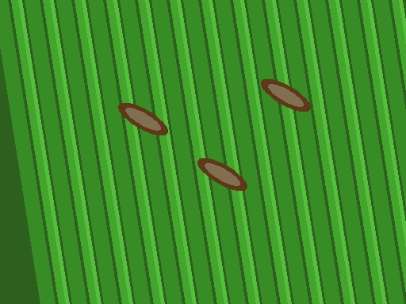

LIVE OPTIC VIEWPORT
•
RES 224×224
terrain
PLOT B-14 • ELV 420M
NPU Rate
99.8 FPS
Latency
8.42ms
ExG Index
0.824
Chlorophyll
94.6%

L1
BIO-OPTIC LOCK
R1
λ: 685nm
NDVI: 0.82
filter_tilt_shift
Oryza sativa
EDGE TIER 1-4
light_mode
Center symptomatic leaf blade within reticle
science
Pre-loaded Benchmark Test Specimens:
1-Tap Verification
tune 4-Tier Rejection Sensitivity Knobs ▼
Blur Cutoff:
100
Foliage ψ:
0.15
Calib Conf θ:
55%
🌫️
TIER 1 OPTICAL FAILURE
PHOTO REJECTED: MOTION BLUR
Substantial camera motion blur detected. Fine chlorotic patterns and fungal margins are smeared.
tips_and_updates
📸 Hold phone with both hands, rest elbows against body for 1 second
⚠️
TIER 4 UNCERTAINTY TRIAGE (< 55% BAR)
⚠️ NOT SURE: AMBIGUOUS DIAGNOSIS
VERDURE has rejected an overconfident raw prediction. Early leaf symptoms resemble multiple conditions.
rotate_right
🔄 Capture secondary macro shot of leaf underside and petiole margin
Leading Differential:
Potato — Early blight (13.5%)
PATHOLOGY CONFIRMED
98.4% CALIBRATED
Solanum tuberosum
Potato Early Blight
10.0 ms
T=1.18 Softmax